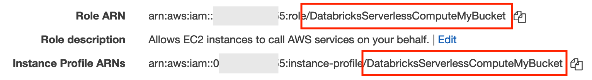

Enable data access configuration
This article describes the data access configurations performed by Databricks administrators for all SQL warehouses using the UI.
Note
If your workspace is enabled for Unity Catalog, you don’t need to perform the steps in this article. Unity Catalog supports SQL warehouses by default.
To configure all SQL warehouses using the REST API, see SQL Warehouses API.
Important
Changing these settings restarts all running SQL warehouses.
For a general overview of how to enable access to data, see Access control overview.
Note
Databricks recommends using Unity Catalog volumes or external locations to connect to cloud object storage instead of instance profiles. Unity Catalog simplifies security and governance of your data by providing a central place to administer and audit data access across multiple workspaces in your account. See What is Unity Catalog? and Recommendations for using external locations.
Before you begin
You must be a Databricks workspace admin to configure settings for all SQL warehouses.
Configure a SQL warehouse to use an instance profile
To configure all warehouses to use an AWS instance profile when accessing AWS storage:
Click your username in the top bar of the workspace and select Admin Settings from the drop down.
Click the Compute tab.
Click Manage next to SQL warehouses.
In the Instance Profile drop-down, select an instance profile.
Click Save.
Warning
If a user does not have permission to use the instance profile, all warehouses the user creates will fail to start.
If the instance profile is invalid, all SQL warehouses will become unhealthy.
You can also configure an instance profile using the Databricks Terraform provider and databricks_sql_global_config.
Note
You can also edit the Data Access Configuration textbox entries directly.
Important
To set a configuration property to the value of a secret without exposing the secret value to Spark, set the value to {{secrets/<secret-scope>/<secret-name>}}. Replace <secret-scope> with the secret scope and <secret-name> with the secret name. The value must start with {{secrets/ and end with }}. For more information about this syntax, see Syntax for referencing secrets in a Spark configuration property or environment variable.
Configure data access properties for SQL warehouses
To configure all warehouses with data access properties, such as when you use an external metastore instead of the legacy Hive metastore:
Click your username in the top bar of the workspace and select Admin Settings from the drop down.
Click the Compute tab.
Click Manage next to SQL warehouses.
In the Data Access Configuration textbox, specify key-value pairs containing metastore properties.
Important
To set a Spark configuration property to the value of a secret without exposing the secret value to Spark, set the value to
{{secrets/<secret-scope>/<secret-name>}}. Replace<secret-scope>with the secret scope and<secret-name>with the secret name. The value must start with{{secrets/and end with}}. For more information about this syntax, see Syntax for referencing secrets in a Spark configuration property or environment variable.Click Save.
You can also configure data access properties using the Databricks Terraform provider and databricks_sql_global_config.
Supported properties
The following properties are supported for SQL warehouses. For an entry that ends with *, all properties within that prefix are supported. For example, spark.sql.hive.metastore.* indicates that both spark.sql.hive.metastore.jars and spark.sql.hive.metastore.version are supported, as well as any other properties that start with spark.sql.hive.metastore.
For properties whose values contain sensitive information, you can store the sensitive information in a secret and set the property’s value to the secret name using the following syntax: secrets/<secret-scope>/<secret-name>.
spark.databricks.hive.metastore.glueCatalog.enabledspark.databricks.delta.catalog.update.enabled falsespark.sql.hive.metastore.*(spark.sql.hive.metastore.jarsandspark.sql.hive.metastore.jars.pathare unsupported for serverless SQL warehouses.)spark.sql.warehouse.dirspark.hadoop.aws.regionspark.hadoop.datanucleus.*spark.hadoop.fs.*spark.hadoop.hive.*spark.hadoop.javax.jdo.option.*spark.hive.*spark.hadoop.aws.glue.*spark.databricks.cloudfetch.override.enabled
For more information about how to set these properties, see External Hive metastore and AWS Glue data catalog.
Confirm or set up an AWS instance profile to use with your serverless SQL warehouses
If you already use an instance profile with Databricks SQL, the role associated with the instance profile needs a Databricks Serverless compute trust relationship statement so that serverless SQL warehouses can use it.
Depending on how and when your instance profile was created, you might not need to modify the role because it might already have the trust relationship. If the instance profile was created in the following ways, it likely has the trust relationship statement:
After June 24, 2022, your instance profile was created as part of creating a Databricks workspace by using AWS Quickstart.
After June 24, 2022, someone in your organization followed steps in the Databricks article to create the instance profile manually.
This section describes how to confirm or update that the role associated with the instance profile has the trust relationship statement. That enables your serverless SQL warehouses to use the role to access your S3 buckets.
Important
To perform these steps, you must be a Databricks workspace admin to confirm which instance profile your workspace uses for Databricks SQL. You must also be an AWS account administrator to check the role’s trust relationship policy or make any necessary changes. If you are not both of these types of admin, contact the appropriate admins in your organization to complete these steps.
In the admin settings page, click the Compute tab, then click Manage next to SQL warehouses.
Look in the Data Security section for the Instance Profile field. Confirm whether your workspace is configured to use an AWS instance profile for Databricks SQL to connect to AWS S3 buckets other than your root bucket.
If you are using an instance profile, its name is visible in the Instance Profile field. Make a note of it for the next step.
If the field value is None, you are not using an instance profile to access S3 buckets other than your workspace’s root bucket. Setup is complete.
Confirm whether your instance profile name matches the associated role name.
In the AWS console, go to the IAM service’s Roles tab. It lists all the IAM roles in your account.
Click the role with the name that matches the instance profile name in the Databricks SQL admin settings in the Data Security section for the Instance Profile field that you found earlier in this section.
In the summary area, find the Role ARN and Instance Profile ARNs fields.
Check if the last part of those two fields have matching names after the final slash. For example:

If you determined in the previous step that the role name (the text after the last slash in the role ARN) and the instance profile name (the text after the last slash in the instance profile ARN) do not match, edit your instance profile registration to specify your IAM role ARN.
To edit your instance profiles, look below the Instance profile field and click the Configure button.
Click your instance profile’s name.
Click Edit.
In the optional Role ARN field, paste the role ARN for the role associated with your instance profile. This is the key step that allows your instance profile to work with Databricks SQL Serverless even if the role name does not match the instance profile name.
Click Save.
Within the AWS console, confirm or edit the trust relationship.
In the AWS console IAM service’s Roles tab, click the instance profile role that you want to modify.
Click the Trust relationships tab.
View the existing trust policy. If the policy already includes the JSON block below, then this step was completed at an earlier time and you can ignore the following instructions.
Click Edit trust policy.
Within the existing
Statementarray, append the following JSON block to the end of the existing trust policy. Ensure that you don’t overwrite the existing policy.{ "Effect": "Allow", "Principal": { "AWS": [ "arn:aws:iam::790110701330:role/serverless-customer-resource-role" ] }, "Action": "sts:AssumeRole", "Condition": { "StringEquals": { "sts:ExternalId": [ "databricks-serverless-<YOUR-WORKSPACE-ID1>", "databricks-serverless-<YOUR-WORKSPACE-ID2>" ] } } }
The only thing you need to change in the statement is the workspace ID. Replace the
YOUR_WORKSPACE-IDwith one or more Databricks workspace IDs for the workspaces that will use this role. To get your workspace ID while you are using your workspace, check the URL. For example, inhttps://<databricks-instance>/?o=6280049833385130, the number aftero=is the workspace ID.Do not edit the principal of the policy. The
Principal.AWSfield must continue to have the valuearn:aws:iam::790110701330:role/serverless-customer-resource-role. This references a serverless compute role managed by Databricks.Click Review policy.
Click Save changes.
Important
If your instance profile changes at a later time, repeat these steps to ensure that the trust relationship for the instance profile’s role contains the required extra statement.
Troubleshooting
If your trust relationship is misconfigured, clusters fail with a message that says “Request to create a cluster failed with an exception INVALID_PARAMETER_VALUE: IAM role <role-id> does not have the required trust relationship.”
If you get this error, it could be that the workspace IDs were incorrect or possibly that that the trust policy was not updated correctly on the correct role.
Carefully perform the steps in Confirm or set up an AWS instance profile to use with your serverless SQL warehouses to update the trust relationship.
Configuring Glue metastore for serverless SQL warehouses
If you need to specify an AWS Glue metastore or add additional data source configurations, update the Data Access Configuration field in the admin settings page. See Enable data access configuration.
Important
Serverless SQL warehouses support the default Databricks metastore and AWS Glue as a metastore, but do not support external Hive metastores.